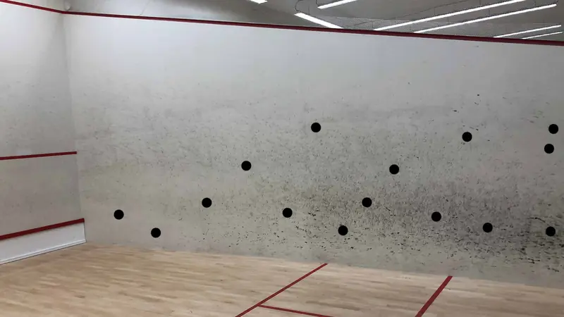

Tips To Maximise Your Squash Ghosting
Ghosting is moving around the squash alone with the intention of improving your fitness and/or your movement technique.
I want to preface this article by saying that I do plan to make a video about this very soon. Until then, here’s the text version.
So, as I said in the introduction; ghosting is moving about the court, usually alone, to improve your fitness and/or your movement technique. Often we just say “movement”, but it’s important to realise that movement *is* technique. How you move your body is no different from how you move your arm when swinging.
Ghosting is a fantastic training method when done properly. I become very frustrated when I see instagram reels of people “ghosting” because they are wasting their time. Their attention is not on what they are doing and nothing they do translates into better movement during matches. So here are my tips to make your ghosting sessions as effective as possible.
1. Play A Rally In Your Mind
I’m starting with this one because it is fundamental to what follows. Your mind MUST be on everything you do. Repeating an action while thinking about your shopping list is not an effective use of your time. Ghosting is no different from any other training. If you do it aimlessly then you are not training properly. Pretend to actually watch the ball hit your strings, pretend to watch your opponent and move around the court in random patterns – just like a real rally.
2. Start With A Serve Or Service Return
In real games and matches, you always start with either a serve or service return and your ghosting should be no different. If you serve, you could actually use a red dot ball. Just be careful where it rolls. This is a simple concept, but it adds to the realism of the training. Plus we all need to practice our serve and service return more.
3. Forget The Simple Star Pattern
Watch any club rally around the world and the concept of the star movement is forgotten in seconds. Real-world squash at club level forces players to move to many points on the court and your ghosting should reflect this. So, don’t just move to the front and back corners, plus the sides. move to all points along the floor by the side wall.
4. Use Masking Tape
Masking tape, also called painters’ tape, is perfect for squash court walls – it leaves no residue when removed. Sticky notes can also be used, but I prefer masking tape. Stick some on the walls so that you can actually hit it when swinging. Watch me demonstrate this in a short Instagram video.
5. Play Shots At Varying Heights
Another thing that frustrates me when watching people ghosting is that every swing they take is low. I can’t keep saying this enough, but real-world squash is not uniform. Many times it’s messy and irregular, and again, your ghosting should reflect that. Below is an example of where you might place the tape or stick notes. Can you ghost without them? Of course, but spend a few moments setting this up is worth it.
You don’t have to hit each one in every rally, just maybe 4 or so. Trying to knock them off is also useful as it forces you to swing properly. It will also help you become more comfortable with the side walls.
6. Keep Most Rallies Short, But Include Some Long Ones Too
Most club player rallies are under ten shots, so your ghosting should reflect that. Ghosting apps or training plans that make you do 30 seconds are great, but your intensity drops quickly, and then the effectiveness drops too. Better to have high intensity rallies mixed with longer slower ones. Ghosting apps and training plans tend to set specific times, whereas real rallies vary in length and your ghosting should reflect that.
7. Focus On Smooth Footwork
I mentioned in the introduction that you can use ghosting for fitness and technique. Focusing on really smooth, flowing, dance-like movements will really help. There’s no reason why you can’t play conditioned ghosting games. For example, if you feel that your movement to the back needs work, start with a serve and then play the imaginary rally just at the back of the court. Swing and move back to the T, watching your imaginary opponent as they play their shot. Smooth footwork is generally quiet footwork, so pay attention to that. Watch pro matches and focus on their feet – not the ball – and see how smooth they are.
8. I’ve been Tricking You!
Maybe you have realised, maybe not, but you have been reading about hybrid visualisation. Visualisation is also called mental rehearsal and is generally performed sitting still, but this version actually works the body as well as the mind. I truly believe that visualisation is THE most underrated training system for amateurs and hope that one day it will be performed as commonly as fitness training.
Final Thoughts
The effort you put into something the more benefit you get out of it. Simple moving around the court, not really thinking about what you are doing is not very effective. The tips above will help you take your ghosting to the next level. Yes, setting up the masking tape takes some time and mentally playing a rally is strange – but it’s the difference between a workout and a GREAT workout!